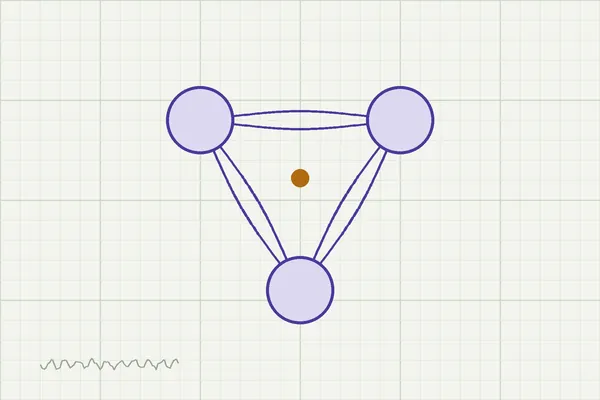

2023-10-17 · Paper · PLOS Computational Biology 19, e1011465
Integrated information theory (IIT) 4.0: formulating the properties of phenomenal existence in physical terms

The current formal version of integrated information theory.
IIT starts from what experience is like and works out what a physical system must be like to have it, then puts that in mathematics. In principle the maths says whether any system is conscious and how. In practice it cannot be computed for a brain, so only rough stand-ins can be tested.
Axioms to postulates to mathematical expressions; a unique measure of intrinsic information consistent with the postulates; explicit treatment of causal relations; a system's unfolded cause-effect structure accounts for the quality of experience.
What we do with it
The reference for the IIT row on our scoreboard and for which toy networks have exactly computable Phi in our planted-answer tests. Planned
Read the original. Source checked against the original.